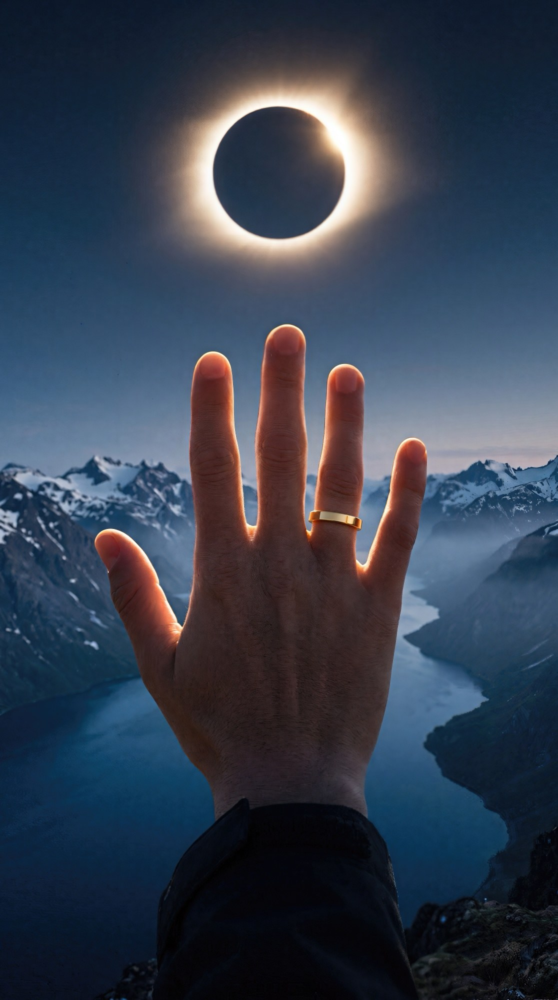
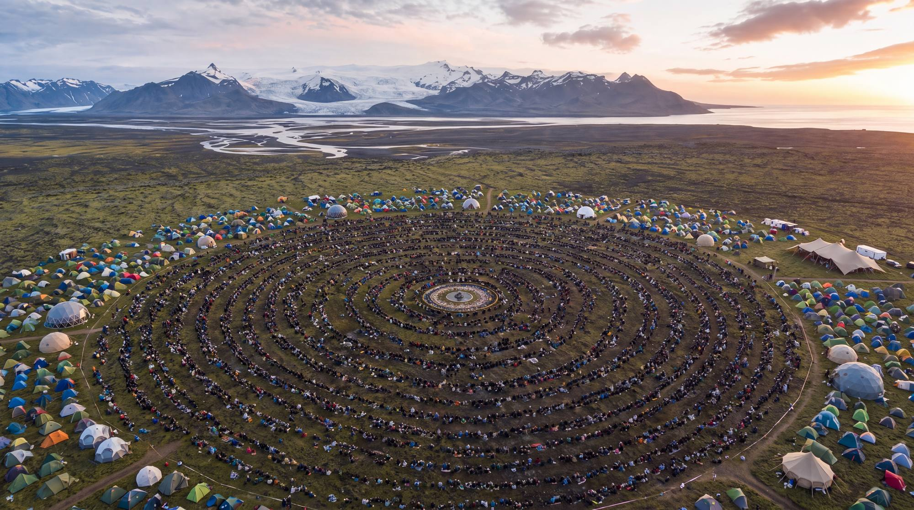
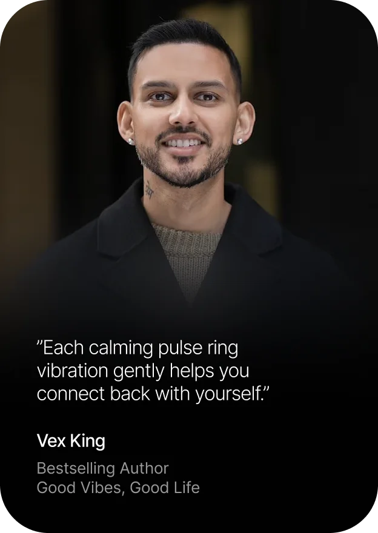
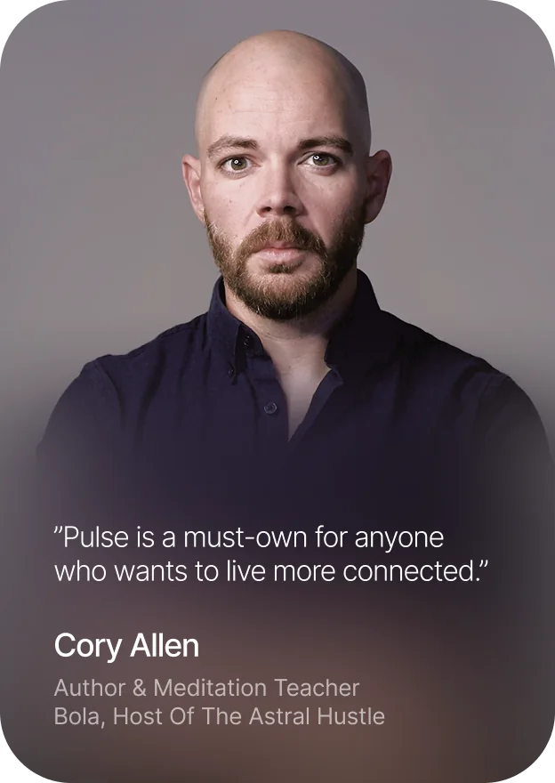
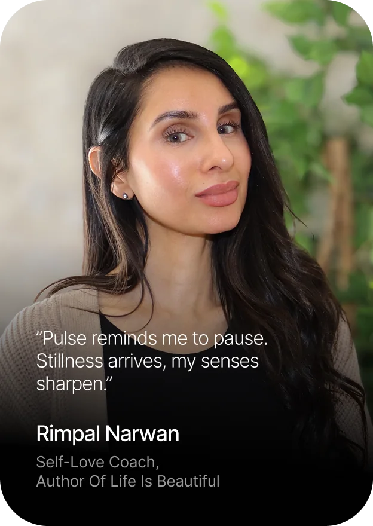
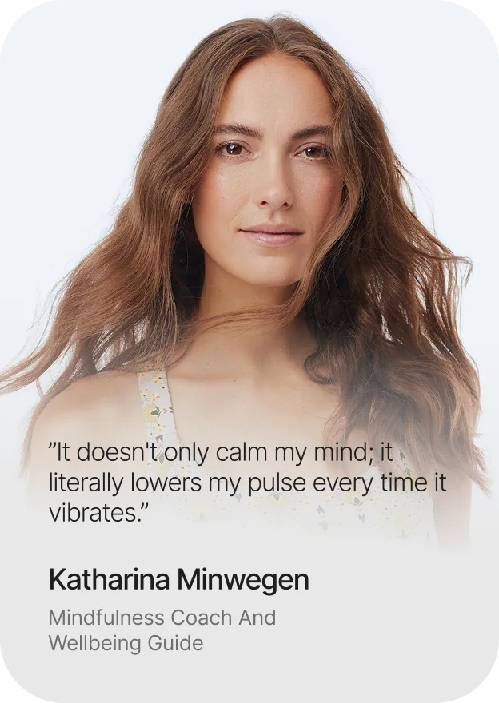
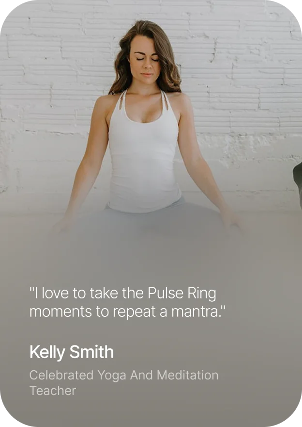
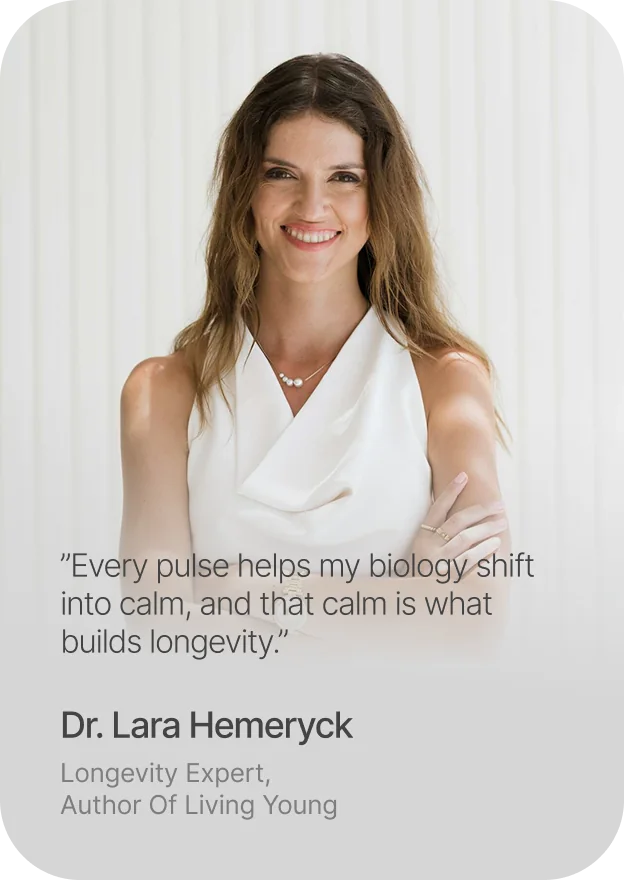

UNIFY
 Massive Global Movement
World’s First Awareness Ring
Massive Global Movement
World’s First Awareness Ring
Break autopilot
Be present together.
rings remaining
Countdown to totality
Snæfellsjökull, Iceland · August 12 · 17:47 UTC

Break autopilot
rings remaining
Countdown to totality
Snæfellsjökull, Iceland · August 12 · 17:47 UTC
The moon covers the sun over the North Atlantic. Day turns to dusk, the birds go quiet, and everyone standing in that shadow stops at the same second.
In Iceland, 3,333 people sit in fifteen rings around a water altar. The music builds, then perfect silence.
Wherever you are, you can stop when they stop. We hold this moment together.

August 122026
Join us, wherever you are.
One pause. One practice. One pulse.
The closing circle Friday, August 14 Live 19:00 Iceland
One intention for yourself. One for the planet.
You choose them in the silence. For two days we practice living into them, and we gather to close the circle in the Garden.
Peak experiences often fade by the time you land. For you, the pause becomes a practice.
The Pulse ring helps you return to that feeling every day after.
Get my ringUse codefor $75 off
184 rings remaining
Add code EclipseShipping at checkout for the free 2-day express. It is not applied automatically.
437 rings remaining






Leave your email and we will hold one for you at the gate, with your VIP code and where to collect it.
Only 184 rings remaining. Your VIP code is ECLIPSE75VIP.
That email did not look right. Try again?
You are on the list. We will hold one for you at the gate and send your VIP code and collection details by email.